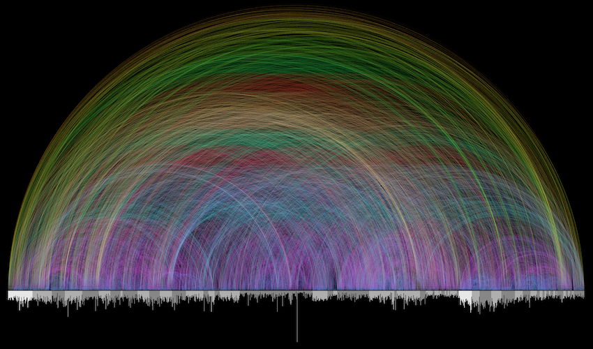
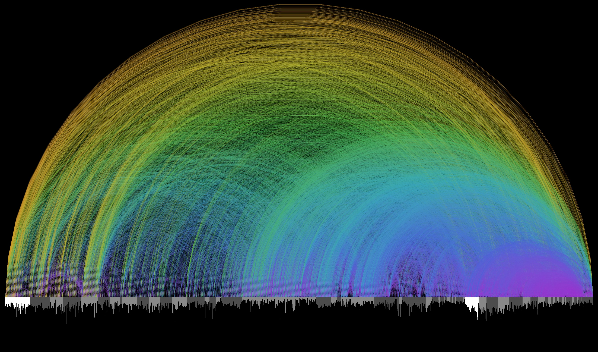
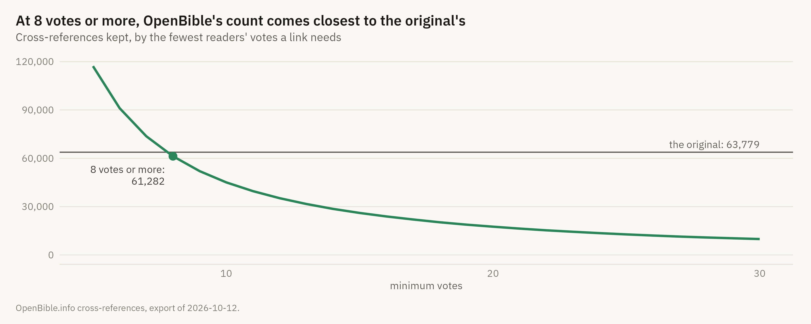
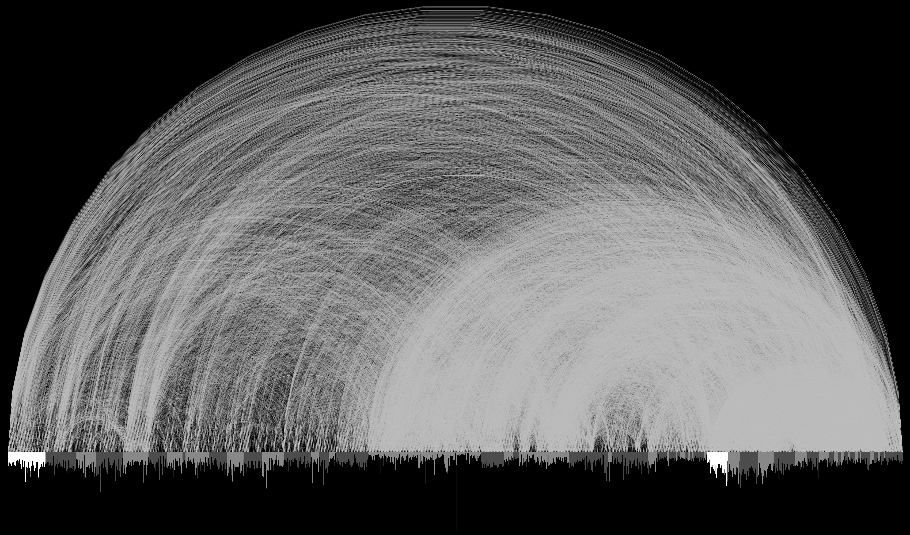
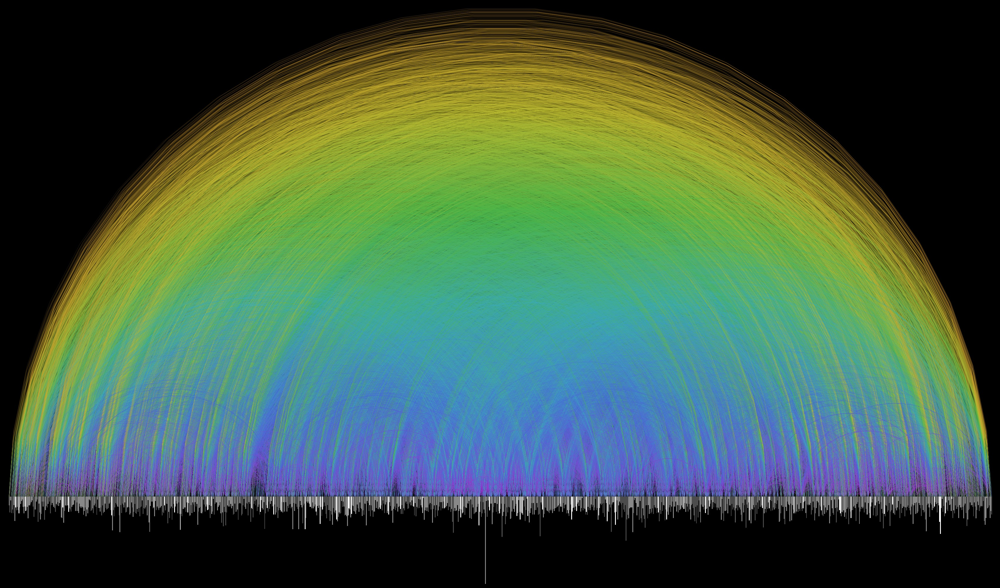

Show the R code
arcs <- arc_paths(links)
recreation <- arc_figure(arcs)
recreation
Gallery · Relationships & structure · back to the gallery
Sixty-three thousand arcs over a bar chart of the Bible’s 1,189 chapters. Its makers say they aimed for something more beautiful than functional, and they got it. The arc diagram is the right form for it, for a reason one of them gives on the same page: the chapters come in an order.
THE ORIGINAL

Bible Cross-References, Chris Harrison and Christoph Römhild, 2007. © Chris Harrison, all rights reserved; chrisharrison.net. Shown at the low resolution the author’s own page serves, under the Dutch citation right (Auteurswet art. 15a), because this page is a critique of it. Not reusable from here.
Christoph Römhild, a Lutheran pastor, had assembled a digital set of the cross-references found in the King James Bible, the links that some editions print in their margins, and asked Chris Harrison to draw it. Harrison’s page says what they were after:
“The pastor and I struggled to find an elegant solution to render the data – 63,779 cross references in total. We set our sights on something more beautiful than functional. At the same time, we wanted a visualization that honored and revealed the complexity of the Bible at every level – as one leans in, smaller details should become visible.”
How to read it
The bars along the bottom are the chapters, Genesis 1 on the far left to Revelation 22 on the far right. Each bar’s length is the number of verses. The very long one is Psalm 119.
Books alternate light and dark grey. The two white stretches are Genesis and Matthew, where the Old and New Testaments begin.
Each arc is one cross-reference between two chapters. The farther apart they are, the wider and higher the arc.
Colour is distance too, violet for neighbours to green and yellow for links across the whole book.
There is no text on the graphic: no book names, no counts, no legend.
THE CRITIQUE
01 · Describe
On black, a half-disc of thin coloured arcs, so many that they read as a texture with bands of colour. Under it a dense strip of grey bars hangs from a baseline, with a single long spike near the middle. No labels, no axes, no legend, no title on the image itself.
02 · Analyse
An arc diagram: every node on one line, here 1,189 chapters in the order of the book, and every link drawn as a semicircle between two of them. Position along the line says which chapters are linked, and an arc’s span and height say how far apart they are. Colour encodes that distance a second time. At 63,779 arcs, no single link can be followed. What the eye reads is density: where many faint arcs overlap, the image is bright.
03 · Interpret
The claim is about the whole book: that the Bible refers to itself everywhere, from end to end. The dome of long arcs is the claim made visible, links from the Old Testament to the New. It is a picture of scale and connectedness, the “first hyperlinked book”, in the phrase Harrison’s page quotes.
04 · Judge
It does what its makers said they wanted, and says so. As an image of scale it is hard to beat, and the arc diagram earns its place, because the chapters have an order and the span of an arc means something. As evidence it answers almost nothing you could ask: not which books cite which, nor how often, nor whether the density is in the text or in the overlap of faint lines. The rainbow adds beauty and no information. As a picture it is honest, but it is not a finding to cite.
THE RECREATION
Römhild’s dataset was never published, so this is drawn from another: OpenBible.info’s cross-references, links that OpenBible’s readers have voted on. Keeping the links with at least 8 votes leaves 61,282, within 4% of the original’s 63,779.
arcs <- arc_paths(links)
recreation <- arc_figure(arcs)
recreation
n = 59,035 links between different chapters, from OpenBible.info’s cross-references with at least 8 votes. Drawn at the original’s proportions, 850 × 500. The colours are ours: the original’s are not published.
Original · Harrison & Römhild, 2007
Ours · ggplot

The two differ most on the right. The New Testament here carries a denser dome of short links within itself than it does in the original. That comes from the two datasets, not from how they are drawn: each shows the choices of whoever compiled it.
HOW WE KNOW
Which links. OpenBible’s file draws mostly on the public-domain Treasury of Scripture Knowledge, and each link carries a count of readers’ votes. How many count as “the” cross-references is a threshold, and the original’s total picks it.
by_threshold <- tibble(min_votes = 5:30) |>
mutate(links = map_int(min_votes, \(v) sum(refs$votes >= v)))
chosen <- filter(by_threshold, min_votes == MIN_VOTES)
stopifnot(which.min(abs(by_threshold$links - HARRISON_N)) == MIN_VOTES - 4)
ggplot(by_threshold, aes(min_votes, links)) +
geom_hline(yintercept = HARRISON_N, colour = p$ink_3, linewidth = .5) +
geom_line(colour = dsvar_accent(), linewidth = 1) +
geom_point(data = chosen, colour = dsvar_accent(), size = 3) +
annotate("text", x = 30, y = HARRISON_N, vjust = -.6, hjust = 1, size = 3.2,
colour = p$ink_3, family = dsvar_font(),
label = sprintf("the original: %s", format(HARRISON_N, big.mark = ","))) +
annotate("text", x = MIN_VOTES - .3, y = chosen$links - 6000, hjust = 1, vjust = 1,
size = 3.2, colour = p$ink_2, family = dsvar_font(),
lineheight = .95,
label = sprintf("%d votes or more:\n%s", MIN_VOTES,
format(chosen$links, big.mark = ","))) +
scale_y_continuous(labels = scales::label_comma(), limits = c(0, NA)) +
labs(title = sprintf("At %d votes or more, OpenBible's count comes closest to the original's",
MIN_VOTES),
subtitle = "Cross-references kept, by the fewest readers' votes a link needs",
x = "minimum votes", y = NULL,
caption = "OpenBible.info cross-references, export of 2026-10-12.")
The chapter bars. OpenBible does not list verse counts, so each chapter’s length is the highest verse number cited anywhere in its full file. That gives 31,083 verses against the King James Bible’s 31,102: the last verse of a few chapters is never cited, and those bars are a verse short.
The arcs. Each arc is a semicircle, so its height is half its span: the height and the colour both encode the distance between the two chapters. A link within a single chapter has no span and no arc; there are 2,247 of those, left out. Links run in one direction in the file and are drawn without one, as in the original.
THE SAME DATA, DIFFERENT CHOICES
arc_figure(arcs, colour = "#c9c9c9")
The same arcs in one colour. Nothing that could be read off the original is lost, because the colour repeated what each arc’s height already said. What is lost is most of the reason anyone hangs it on a wall, which is a fair account of what “more beautiful than functional” means.
set.seed(1189)
shuffle <- sample(nrow(chapters)) # chapter at position i moves to shuffle[i]
shuffled_links <- links |>
mutate(a = shuffle[lo], b = shuffle[hi],
lo = pmin(a, b), hi = pmax(a, b), span = hi - lo)
canonical_bars <- bars
bars <- bars |> mutate(pos = shuffle[pos]) # arc_figure() draws `bars`
arc_figure(arc_paths(shuffled_links))
bars <- canonical_barsEvery link the same, every chapter put somewhere at random on the line. The arcs now say only that the Bible’s chapters are linked to each other, which the first picture said too, and nothing about where. The canonical order is what gave an arc’s span a meaning: links between neighbouring chapters, within a book, across the two Testaments. This is the rule the field guide gives for arc diagrams.
book_names <- chapters |> distinct(book_index, book)
# Each pair counted once, then mirrored, so the grid reads the same both ways.
pairs <- links |>
mutate(from = chapters$book_index[lo], to = chapters$book_index[hi]) |>
count(from, to)
by_book <- bind_rows(pairs, pairs |> filter(from != to) |> rename(from = to, to = from))
top <- pairs |> filter(from != to) |> slice_max(n, n = 1, with_ties = FALSE)
ggplot(by_book, aes(to, from, fill = n)) +
geom_tile() +
geom_tile(data = bind_rows(top, rename(top, from = to, to = from)),
width = 1, height = 1, fill = NA, colour = p$ink, linewidth = .6) +
scale_x_continuous(breaks = book_names$book_index, labels = book_names$book,
expand = expansion(0), position = "top") +
scale_y_reverse(breaks = book_names$book_index, labels = book_names$book,
expand = expansion(0)) +
scale_fill_dsvar_o(transform = "log10", name = "links") +
coord_equal() +
labs(title = sprintf("Between two different books, %s and %s are linked most: %s times",
BOOK_NAMES[top$from], BOOK_NAMES[top$to],
format(top$n, big.mark = ",")),
subtitle = "Cross-references between every pair of books, in canonical order. Darker is more, on a log scale",
x = NULL, y = NULL,
caption = sprintf("n = %s links, OpenBible.info, %d votes or more.",
format(nrow(links), big.mark = ","), MIN_VOTES)) +
theme(axis.text.x = element_text(angle = 90, hjust = 0, vjust = .5, size = rel(.6)),
axis.text.y = element_text(size = rel(.6)),
panel.grid.major = element_blank(), axis.line.x = element_blank(),
legend.position = "right")
The same links counted, not drawn. Every pair of books has a cell, so this can answer what the arcs cannot: which books cite which, and how often. It is an adjacency matrix, the form the field guide gives for dense networks.
Harrison drew a second graphic from the Bible, of who is named in the same verse as whom (2,619 people and places), and did not use arcs for it. “Because such relationships had no ordering or structure (unlike the cross references), I used a spatial clustering algorithm.” That sentence is the rule for an arc diagram: it needs an order the nodes already have, because an arc’s span is only worth drawing when the distance it spans means something. The same holds for the spokes of a radar chart.
SOURCES
data/raw/openbible-cross-references.csv, chapter lengths as data/raw/openbible-chapters.csv; see R/fetch-gallery-data.R.